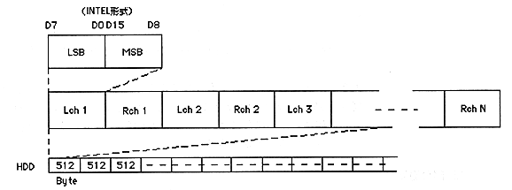

Return to previous page ｜ Return to menu ｜ Go to next page
(2) Creation of materials and programs
Prepare the image data and programs to be placed on the
CD in the form of MS-DOS files.
- CD-DA file format
・ Binary file of MS-DOS file format
・ Data in PC format compatible with Virtual CD is in Intel format (little endian) as shown in Fig. 3.
It must be lined up.
∙ If the data is in Motorola format (big endian), perform byte swap in advance.
It is necessary.

Figure 3. CD-DA file format
(3) CD layout information description
Specifies how to place MS-DOS files such as materials and programs on the CD.
A certain format is determined so that the structure of the CD can be described, and input is performed according to this format using a text editor. Such a file is called a “script file” and its contents are called a “script”.
Creating this script file is a description of the CD layout. How to create this script file is described in Chapter 3 Creating Data.
(4) Create CD configuration information file
Run the program VCDPRE.EXE.
Perform this work when performing "Direct DOS File Access".
VCDPRE.EXE inputs a script file, calculates the correspondence between each MS-DOS file and the CD access position (minute, second, frame value), and creates a correspondence table in the file. The file generated by this VCDPRE.EXE is read and used by the virtual CD emulator.
(5) Create CD image file
Run the program VCDBUILD.EXE. Perform this work when performing "real-time emulation".
VCDBUILD.EXE inputs a script file and creates a CD image and TOC information in the file. The file generated by VCDBUILD.EXE is read and used by the virtual CD emulator.
Return to previous page ｜ Return to menu ｜ Go to next page